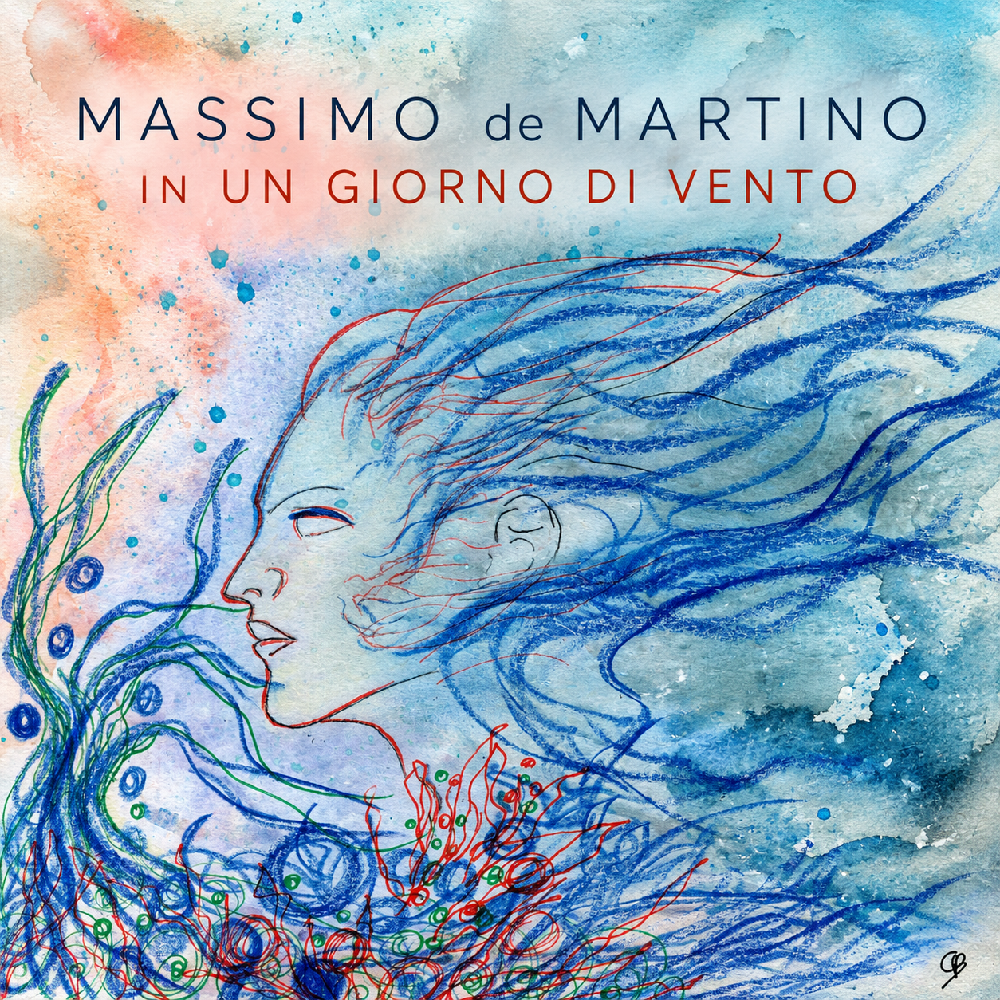
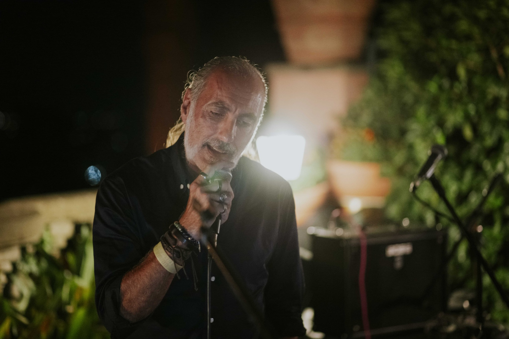
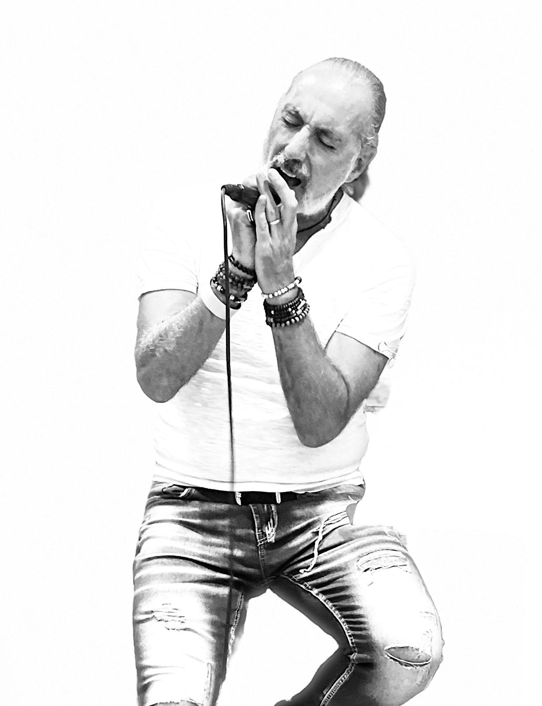
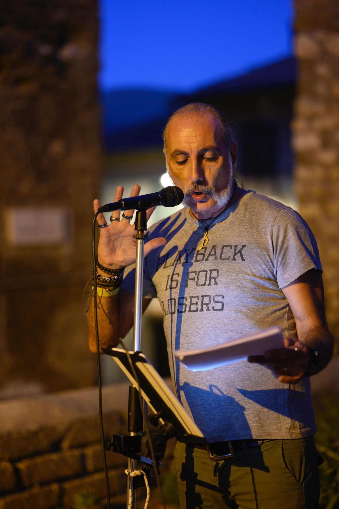
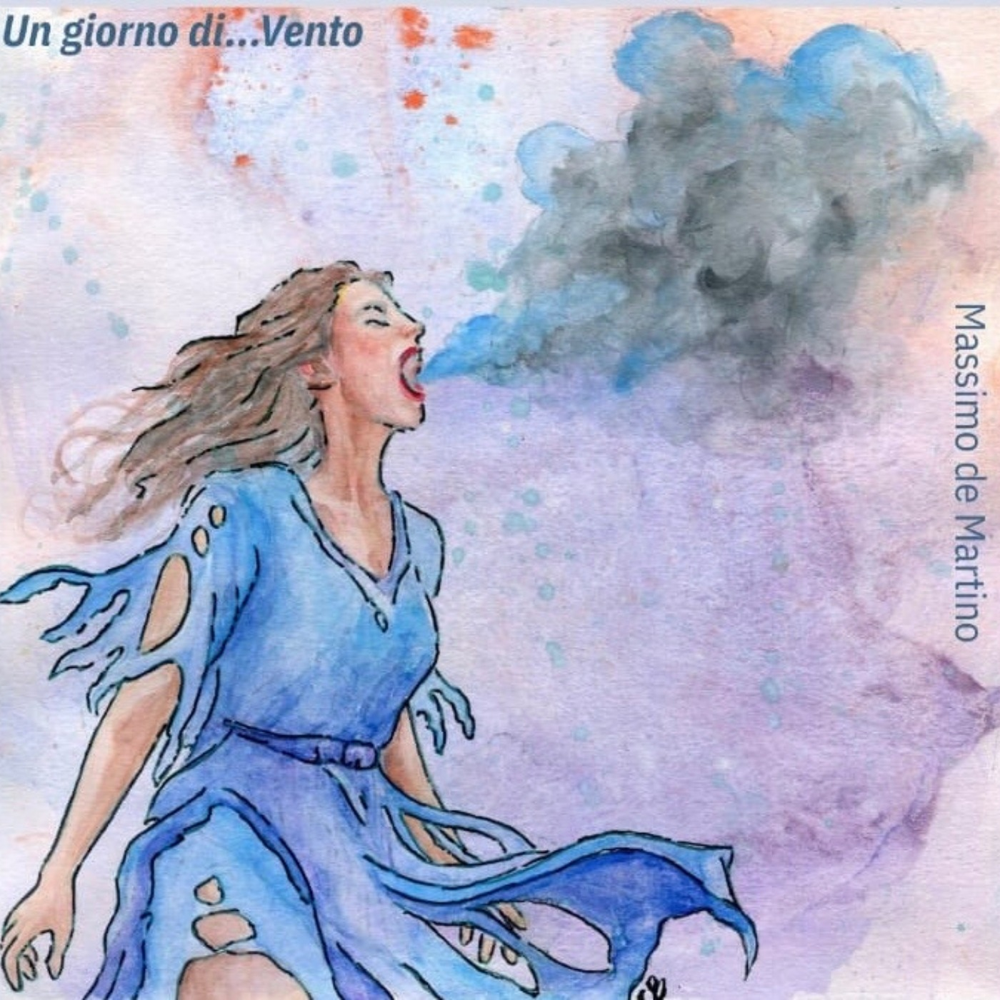

Un giorno di...vento.
Un giorno divento.
Quando si cancellano le distanze,
il vento diventa trasformazione.
Opera originale e animazione: Cristina Bertolissio
Il brano
In un giorno di vento parte da un incontro, da un momento da trattenere, e lascia che il vento faccia il resto: attraversa il corpo, mette in movimento pensieri e parole, trasforma la poesia in canto.
E il vento arriva prima ancora della voce. La canzone si apre con il pianoforte che sembra affiorare da lontano, quasi portato verso di noi dal vento. Poi il suono si avvicina, il brano prende corpo e il cantautorato si lascia attraversare dal rock.
Fino a una domanda lasciata volutamente aperta: sono roccia o foglia d’autunno?
il cuore sa come si fa”



Per le radio
Crediti
Autore: Massimo de Martino
Arrangiamento: Massimo de Martino, Marco Fanella
Registrazione e mix: Marco Fanella
Ravel 5 Recording Studio
Media kit
Artwork, fotografie stampa, scheda radio e materiali audio raccolti in un unico pacchetto.
SCARICA MEDIA KITL'album

Un giorno di...Vento
In un giorno di vento apre il primo album solista da cantautore di Massimo de Martino: Un giorno di...Vento.
Un disco nato dall'incontro tra canzone d'autore, rock, poesia e spoken word, dopo i percorsi musicali con Sipario, SistroMofo e Mr. Key.
Un giorno di...Vento è stato pubblicato esclusivamente in vinile e su Bandcamp.
Non è disponibile sulle piattaforme di streaming digitale: una scelta che restituisce all'album il tempo dell'ascolto e al disco la sua dimensione di opera, fisica o digitale, da incontrare nella sua interezza.
Vinile 33 giri · edizione limitata 100 copie
Massimo de Martino
Cantautore, poeta, performer. Tre modi diversi di usare la stessa materia: la parola.
Cinque libri di poesia, quattro album pubblicati con i precedenti progetti musicali e un percorso attraversato da Sipario, SistroMofo e Mr. Key precedono il debutto solista Un giorno di...Vento.
Nel suo lavoro canzone, poesia, spoken word e poesia performativa non sono territori separati. Si attraversano continuamente, cercando quel punto in cui una parola smette soltanto di significare qualcosa e comincia a suonare.
Opera originale e universo grafico: Cristina Bertolissio
Radio · stampa · interviste
Massimo de Martino
massimodem@gmail.com
+39 337 106 1405 · WhatsApp